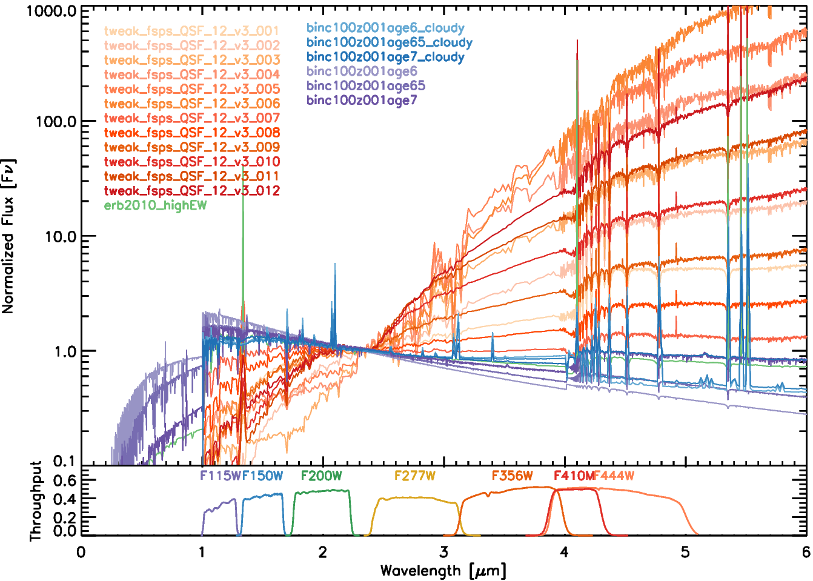
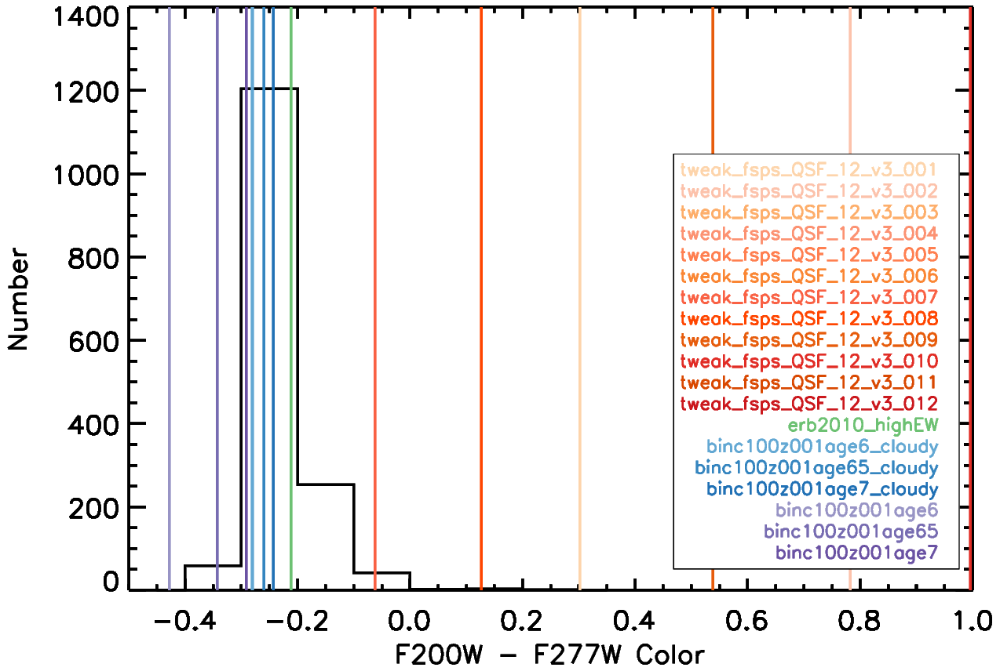

This page details the public release of the SED Templates from Larson et al 2022. A compressed file which contains all of the new templates, parameter files, and a ReadMe which can be downloaded here:
We find that galaxies at z=6-8, are bluer than the "tweak FSPS" templates included in the EAZY SED fitting software ( Brammer et al. 2008 ). We expect this to be true of z > 8 galaxies as well; due to expected young stellar populations at such early times in cosmic history, a decrease in metallicity at higher redshifts, and active star formation episodes these high-redshift galaxies likely have increasingly bluer colors. It is imperative that we use appropriate models in our SED fits to ensure the accuracy of our photometric redshifts. Larson et al 2022 find that the simulated galaxies from the CEERS Simulated Data Release V3 catalog are also bluer at these higher redshifts than the traditional templates. Larson et al. 2022 describes these templates and how they improve upon the ability to recover accurate redshifts for the simulated galaxies. Please reference that work if using these templates and contact the author if you have any questions.
A few initial notes:
These templates are all in a format that EAZY can read – wavelength is in Angstroms, and Flux is in Flambda
These were made to be used with the 'old' version of EAZY (i.e, not EAZY-py), which can be downloaded at Github here: github.com/gbrammer/eazy-photoz
Previously, Finkelstein et al 2022a had added a template from Erb et al. 2010 (with and without Lyα), which is bluer than the Tweak FSPS models and which covered ~%60 of the color space of their z=6-8 galaxies. We do not include these two templates, but they are shown them in the plots below for completeness and to illustrate that we needed even bluer templates still.
We model the emission line spectra using Cloudy v17.0 described in Ferland et al 2017

Above is a plot showing the rest-frame ultraviolet (UV) region of our SED template set, which have all been redshifted to z=10. The red and orange lines show the latest standard EAZY template set (tweak_fsps_QSF_v12_v3) which is included with the software. The purple lines show the BPASS models as described below (Set 1), which are very blue and do not include emission lines. The blue lines show the BPASS + Cloudy templates with high nebular-line equivalent widths (EWs), as described below (Set 4). All of the templates are normalized to their flux density at 2.301μm (between the F200W and F277W filters on NIRCAM). We also include the template from Erb et al. 2010 used by Finkelstein et al 2022a which includes a high-EW Lyα emisison line. This template is not included in our published set as the new BPASS and Cloudy templates satisfy the same color range (see next Figure) and our redshift fits were not improved by its inclusion (Larson et al 2022).
×

In the plot above, the histogram shows the distribution of F200W − F277W colors for the z > 8 galaxies from the SAM catalog ( Yung et al. 2022 ). The solid vertical lines show the rest-UV color of the SED templates, using the color calculated by integrating the templates through the JWST/NIRCam F200W and F277W filters after placing them at z=10. The bluest EAZY FSPS template only reaches a rest-UV color of −0.1, while the majority of the comparison high-redshift sample have bluer (more negative) colors. Finkelstein et al 2022a added a bluer template from Erb et al. 2010 (green), but it is still redder than the majority of our simulated high-redshift galaxies. We greated BPASS (purple) and BPASS + Cloudy emission line (blue) templates and note that the BPASS + Cloudy templates are redder in color than the BPASS only models due to their nebular continuum emission. This new full template set can reproduce the colors of all the high-redshift galaxies in our simulated sample.
×
Description of Templates
Set 1: BPASS Only
Template Filenames:
binc100z001age6.dat
binc100z001age65.dat
binc100z001age6.dat
These are BPASS models that have:
NO emission lines added
Binary stars included
Chabrier IMF mass limit of 100 M☉
Metallicity Z=0.001 (5% Z☉)
Log stellar age of 6, 6.5, and 7
Set 2: BPASS + Cloudy -- Full Lyα
Template Filenames:
binc100z001age6_cloudy_Lya.dat
binc100z001age65_cloudy_Lya.dat
binc100z001age6_cloudy_Lya.dat
These are the BPASS models from Set 1 that have Cloudy emission lines added with the following parameters:
Ionization parameter log U = -2
Gas-phase metallicity = 0.05 Z☉ (i.e., fixed to stellar Z)
Hydrogen density of the gas cloud = 300 cm−3
Spherical geometry
"Covering factor" of the gas around the stars is 100%
NOTE: Nebular continuum is included with Cloudy, so these models tend to be redder than the BPASS ones alone due to this effect.
Set 3: BPASS + Cloudy -- Reduced Lyα
Template Filenames:
binc100z001age6_cloudy_LyaReduced.dat
binc100z001age65_cloudy_LyaReduced.dat
binc100z001age6_cloudy_LyaReduced.dat
These are the BPASS models from Set 1 that have Cloudy emission lines added from Set 2 with the following change:
Lyα has been reduced to 1/10 of that produced by Cloudy – this is more akin to a 10% escape fraction.
NOTE: Useful for typical galaxies in the z~4-7 range.
Set 3.5: BPASS + Cloudy -- Less Reduced Lyα
Template Filenames:
binc100z001age6_cloudy_LyaReducedNarrowband.dat
binc100z001age65_cloudy_LyaReducedNarrowband.dat
binc100z001age6_cloudy_LyaReducedNarrowband.dat
These are the BPASS models from Set 1 that have Cloudy emission lines added from Set 2 with the following change:
Lyα has been reduced to 1/3 of that produced by Cloudy – this is more akin to a 33% escape fraction.
NOTE: Useful for typical galaxies in the z~4-7 range with high EWLyα such as Narrowband-selected samples.
Set 4: BPASS + Cloudy -- No Lyα
Template Filenames:
binc100z001age6_cloudy.dat
binc100z001age65_cloudy.dat
binc100z001age6_cloudy.dat
These are the BPASS models from Set 1 that have Cloudy emission lines added from Set 2 with the following change:
Lyα has been fully removed.
NOTE: Useful for typical galaxies in the Epoch of Reionization where neutral intergalactic medium (IGM) attenuates Lyα emission from galaxies.
Suggestions for Use
Most of you will probably want to use 6 of these SEDs total: Set 1 + Set 3 or 4. The templates with the Full Lyα line (Set 2) are likely not applicable; these are mostly for reference. The set used for the high-redshift galaxy selection by Larson et al 2022 with the CEERS SAM catalog was Set 1 + Set 4, and those are aslo the ones included in the plots above. None of the new templates used for the tests in Larson et al 2022 included Lyα, not just due to the expected IGM attenuation but because the SAM galaxies also do not include Lyα emission.
Parameter Files included for EAZY
The parameter files for EAZY with different combinations of the old + new templates are also included in the tar file and listed below:
tweak_fsps_QSF_12_v3_newtemplates.param - includes tweak FSPS + Set 1 + Set 4 (useful for z>8 galaxies)
tweak_fsps_QSF_12_v3_newtemplates_Lya.param - includes tweak FSPS + Set 1 + Set 2 (probably do not want to use)
tweak_fsps_QSF_12_v3_newtemplates_LyaReduced.param - includes tweak FSPS + Set 1 + Set 3 (useful for lower redshift (z~4-7) galaxies)
tweak_fsps_QSF_12_v3_newtemplates_LyaReducedNarrowband.param - includes tweak FSPS + Set 1 + Set 3.5 (useful for galaxies with high EWLyα)